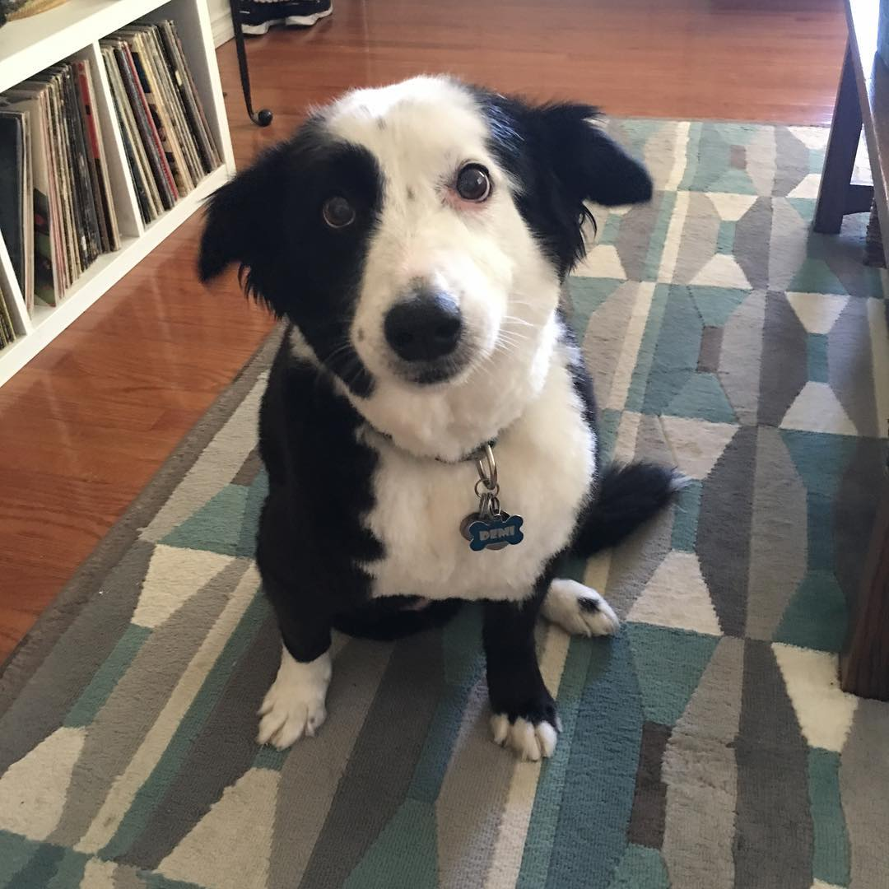
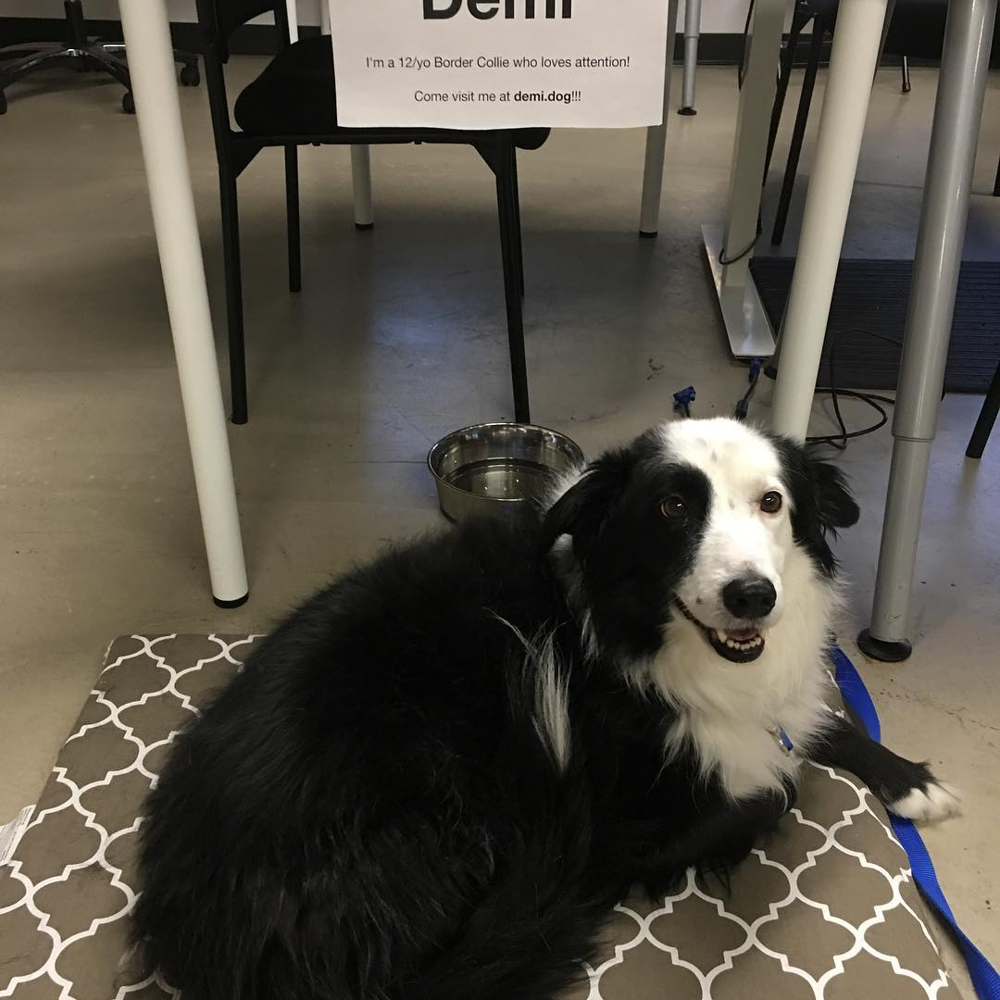
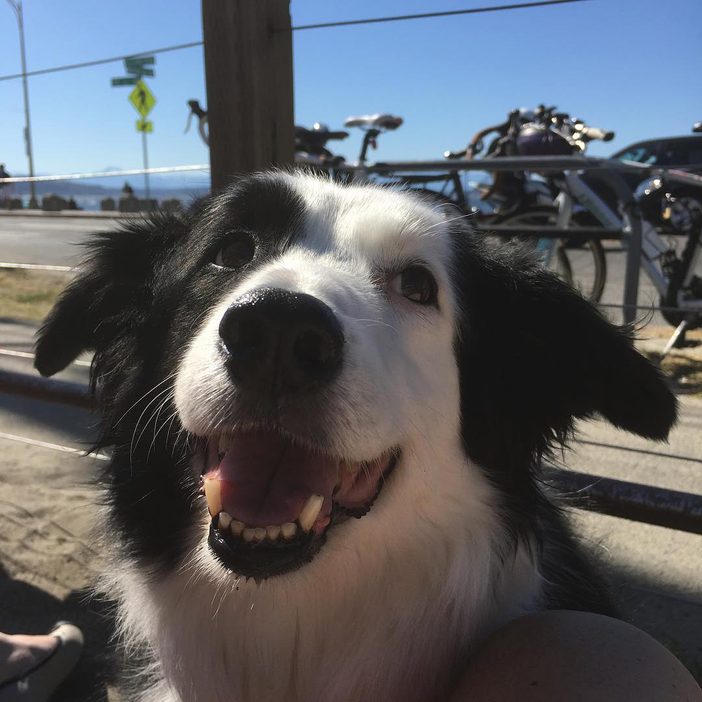

Game Concept:
Since it's not easy to meet Code Fellows high expectation to pass and get to 301 class we decided to kidnap the three legged Demi dog for our passing grade. The instructors Sam, Nicholas and Koko are fighting to keep Demi in this game. Koko is tiny and has the most movement in the game so you can easily get shot by her. Nicholas is more calm and distracting but Sam is the one that you are waiting to show up and take the Demi from, he also rarely shows up.



